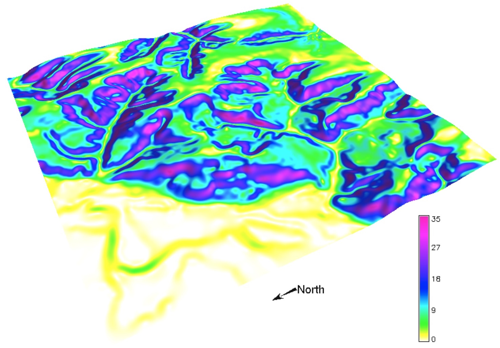
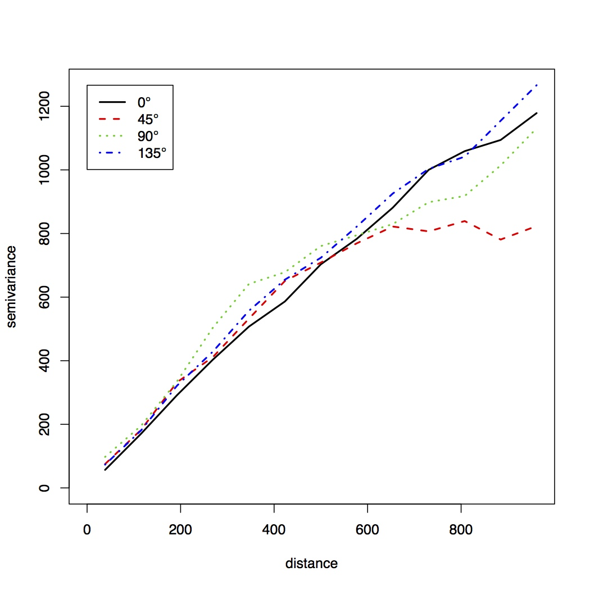
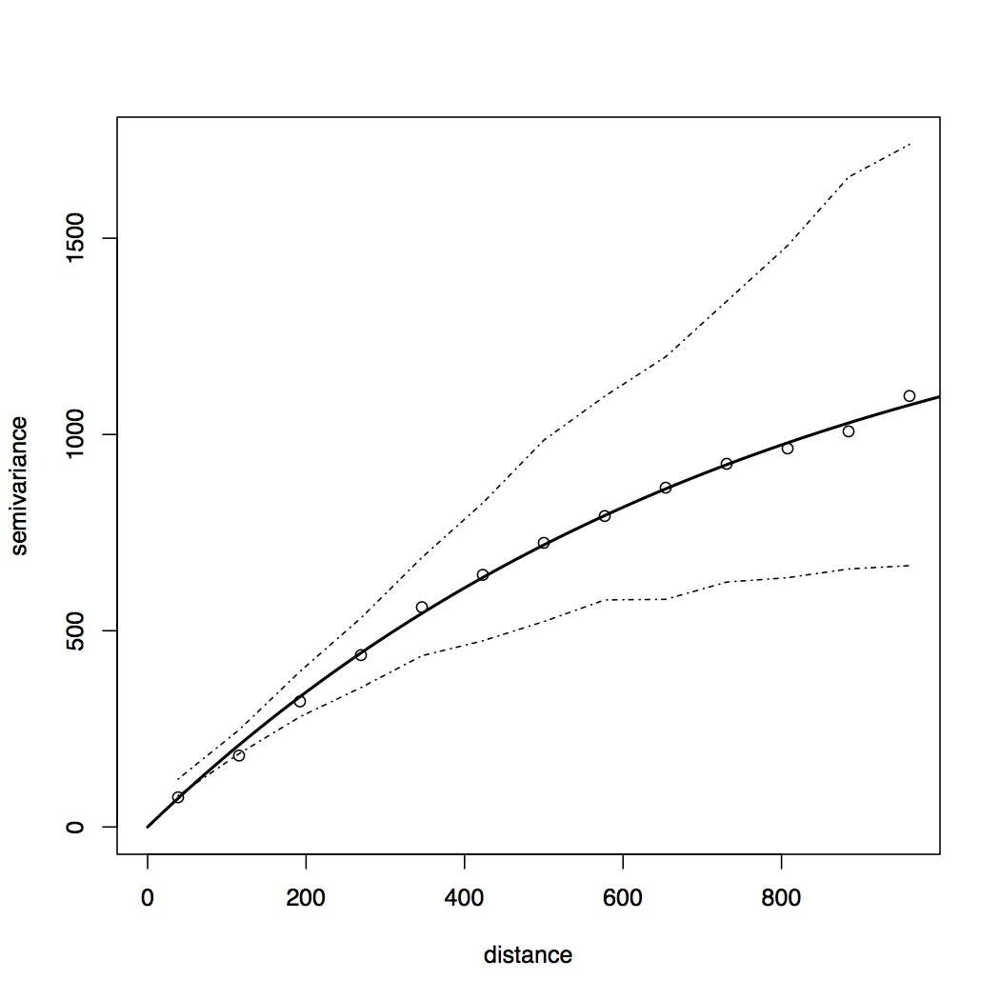
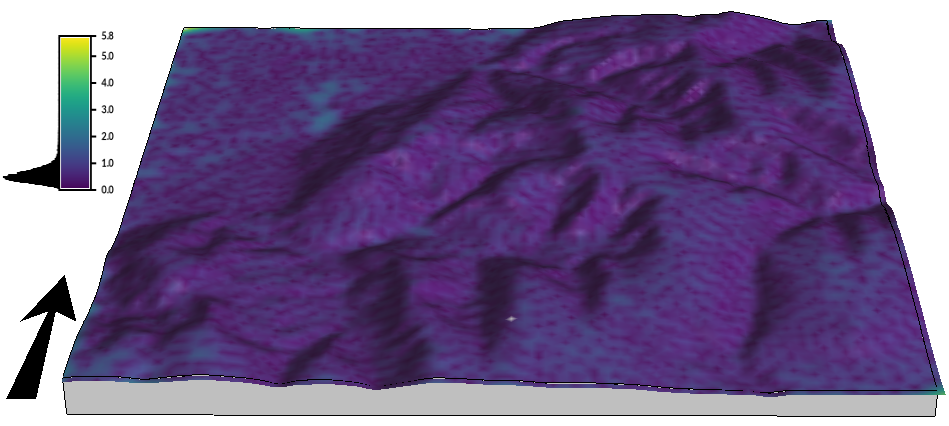
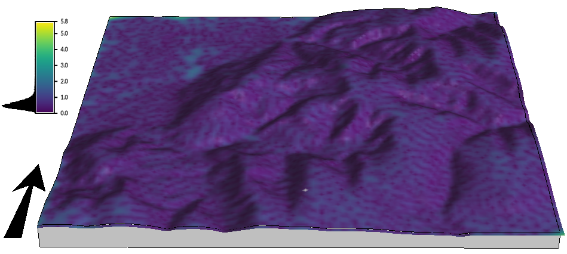

Geostatistical simulations and uncertainty propagation
Helena Mitasova, Anna Petrasova, Vaclav Petras
Learning objectives
- motivation for geostatistical simulations
- geostatistical conditional simulations
- Gaussian Sequential Simulation
- simulations for uncertainty propagation
- coupling GRASS and R for geostatistics
Problem formulation
In previous units we generated DEMs with simulated noise
by adding random values to the DEM with:
- uniform distribution
- gaussian distribution
- distribution with spatial autocorrelation
- fractal
We then visualy evaluated the impact of different noise distribution
on the flow pattern modeling and stream extraction.
Problem formulation
To quantitatively evaluate uncertainty in parameters derived from a DEM
we can generate multiple realizations of a DEM by starting with different seed
This approach does not take into account the spatial correlation of the elevation values in our DEM
We can use geostatistical simulation to generate the DEM realizations
Motivation
Derive model of spatial distribution of a variable
based on a limited set of discrete scattered observations:
- if the measured data capture features of the distribution at the level of detail needed
for the application we can use interpolation
See GIS582 Spatial interpolation topic
- some interpolation methods are based on deterministic, process-based simulations: splines
- if the measured data are limited and we know statistical properties of the distribution,
we can use simulation
Problem formulation
Given $m$-points $(x_i, y_i, z_i), i=1,m$ find such $F(x,y)$ that for each $i=1,m$
$$z_i=F(x_i,y_i) + e(x_i,y_i)$$
and compute $z_k=F(x_k,y_k)$ where $(x_k,y_k)$ are grid points
Problem formulation


Interpolation: distance between grid points is similar to the average distance between the given points
Simulation: distance between grid points can be much smaller - higher resolution grid
Problem formulation
- The problem does not have a unique solution so additional conditions are used.
- Interpolation: we use $F(x,y)$ to estimate values at unsampled locations
- Simulation: we use $F(x,y)$ to condition our simulation of a more complex surface
Geostatistical simulations
- modeled spatial distribution is complex
- limited number of samples is available
- interpolation does not capture the complexity, result is too smooth
- we have some knowledge of statistical properties of the modeled distribution
- we generate many realizations of the surface using the given statistical properties
- the realizations are used to compute the simulated distribution mean and uncertainty maps
Applications
Observations where sampling is limited:
- subsurface: reservoir modeling in petroleum industry, mining,
soil properties, groundwater pollution
- surface: variables not detectable by RS, e.g. some pollutants
- generate multiple realizations of modeled distribution for uncertainty propagation studies
Gaussian Sequential Simulation
- input: sparse, scattered point measurements
- analyze the data for normality
- apply transformation if needed to get normal distribution (log or Box-Cox transform)
- compute semivariogram and its nugget, range and sill
- define spatial extent and resolution of resulting grid
Generate one realization
- assign data points to closest grid cell (nearest neighbor point binning)
- select random unsampled grid location and compute kriged estimate + random residual to get simulated value
using the neighboring given points
- use "random path" to define order of empty grid cells to be simulated
- at each new unsampled grid location use the nearby given points and previously simulated values
to compute the simulated values
this is different random walk than what we refered to in path sampling simulations
Application example for stream extraction
- What is the spatial pattern and magnitude of stream location probability?
- Quantify uncertainty in the stream position when deriving streams from DEM:
propagation of uncertainty in DEM
- Assignment Example from A Practical Guide to Geostatistical Mapping by T. Hengl.
Elevation data analysis
Baranja region DEM and slope map

Elevation data analysis
Plot distribution of given points $(x_i,y_i,z_i)$

Elevation data analysis
- Compute anisotropic and isotropic experimental variogram from given elevation data
- Fit Matern variogram model with smoothing parameter
- Matern covariance equation


Conditional simulation of DEMs
- compute 100 relizations of DEM using GSS
Stream uncertainty mapping
- derive stream network for each DEM
- compute count of stream presence from all DEMs
- derive probability and uncertainty from the count map
Stream uncertainty mapping
 

In the assignment evaluate the relationship between stream uncertainty and slope
Elevation data analysis
Lake Wheeler SECREF watershed

Elevation data analysis
Plot distribution of given points $(x_i,y_i,z_i)$

Elevation data analysis
- Compute anisotropic and isotropic experimental variogram from given elevation data
- Fit Matern variogram model with smoothing parameter


Generate DEMs at 2m resolution or better
Inglis N., 2019, GIS714 course assignment report.
Stream uncertainty mapping

Inglis N., 2019, GIS714 course assignment report.